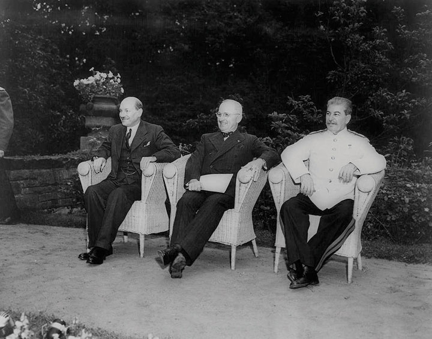
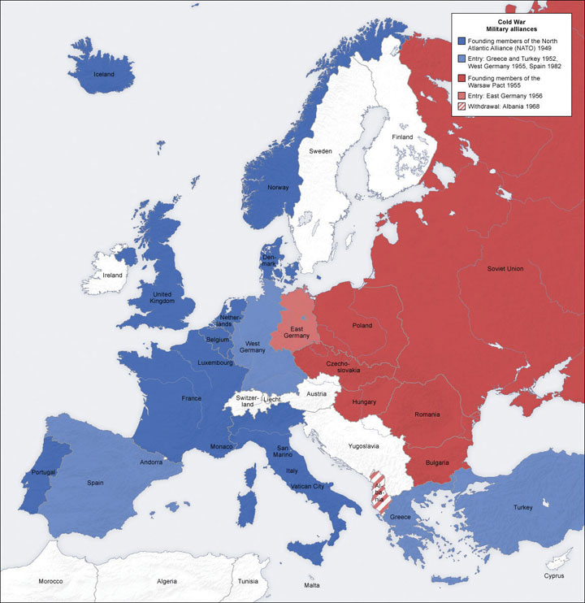
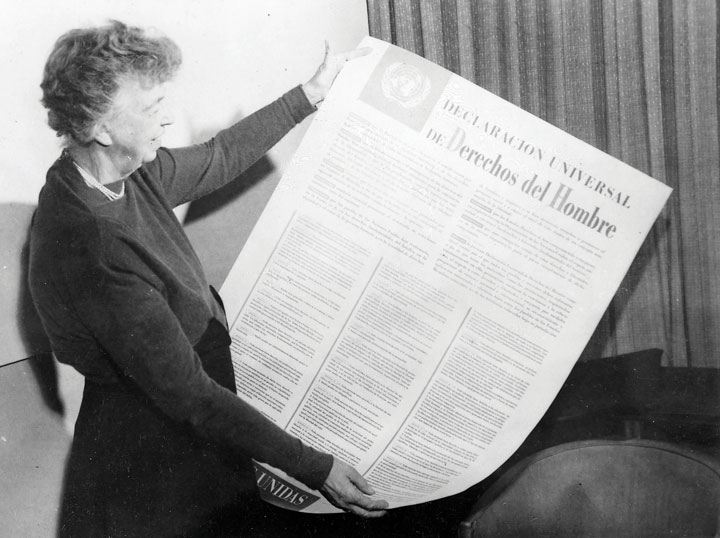
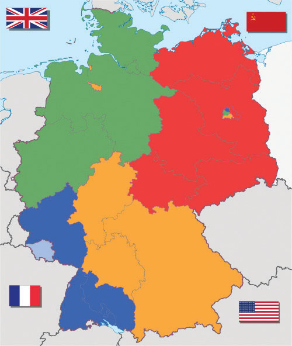
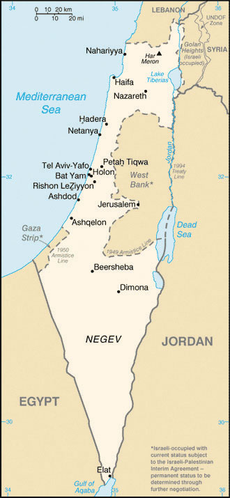

The motivation behind Soviet and US attempts to spread their economic and political systems to other nations is heavily debated by historians. What is clear is that both nations came to view the other as aggressive and committed to global domination by the early 1950s. For example, in 1950, officials within the Department of Defense worked with foreign-policy experts to create a report to the National Security Council. This sixty-page document was known by its shortened name, NSC-68A lengthy document issued by the National Security Council in 1950 that demonstrated the belief that the Soviet Union represented a direct threat to the American way of life. The document and its core assumptions influenced US foreign policy throughout the Cold War., and later typified the view of both nations toward the other. NSC-68 explained that the Soviet Union sought “to impose its absolute authority over the rest of the world.” The stakes could not have been higher, the report continued, as Soviets threatened not only “destruction of this Republic but of civilization itself.”
Many Americans had their doubts about the extent to which the Soviet Union and international Communism really posed a threat to their nation. It also appears that many Soviets at least privately expressed doubts about the potential threat Americans represented to their well-being in these early years. However, the victory of Communist forces in China, the outbreak of the Korean War in 1950, and the political climate that emerged within the United States by 1950 created a situation where few political leaders wanted to be seen as soft on Communism. Within the Soviet Union, a similar political environment emerged, and there was even less tolerance for those who doubted the “hard-liners” that dominated the Kremlin. The result was that only five years after their defeat of Hitler, the one-time allies began to evaluate nearly every foreign and domestic-policy decision within the context of a Cold War that seemed increasingly impervious to the ideas and perspectives of those outside of each government’s inner circle.
Recent scholarship based on previously closed Soviet archives tends to challenge Cold War perceptions of the Soviet Union as dominated by an ideology of aggression toward the United States and its allies. Instead, what emerges from recently declassified documents is the image of a nation driven primarily by concerns of its own security and stability. At the same time, these documents confirm the existence of massive human rights violations and contempt for democracy and free discussion within the Soviet Union and throughout its sphere of influence. These documents also demonstrate that many of the leaders and people of Eastern Europe enjoyed a higher level of historical agency in shaping the histories of their nations than was previously assumed. Although it remains clear that the Soviet Union dominated military and foreign-policy decisions in each of these nations, the notion that all decisions and all communication flowed downward from the Kremlin is being revised to account for the agency of the people and leaders of Eastern Europe.
The origins of the Cold War can be seen while America and the Soviet Union were still allies in World War II. The two nations had a history of mutual suspicion, and both maintained very different ideas about how postwar Europe should be administered. Each nation wanted to recreate Europe in their own image by forming Western-style democracies or Soviet-aligned Communist governments. In addition, the Soviets wanted to create a pro-Russian “buffer zone” that would insulate them from potential attacks in the future. These conflicting visions were clearly manifest during the meetings of American, British, and Soviet diplomats at the Yalta and Potsdam Conferences in 1945.
In February 1945, Churchill, Roosevelt, and Stalin met at the Yalta ConferenceFebruary 1945 meeting in the Soviet Union between President Franklin Delano Roosevelt, British Prime Minister Winston Churchill, and Soviet Premier Joseph Stalin. The three leaders discussed wartime strategy, the creation of the United Nations, and the reconstruction of Europe.. Yalta was a popular resort city in the Ukraine where the three leaders discussed the future of Germany and Eastern Europe while their armies continued to close in around Hitler. Stalin believed that the defense of his nation depended on creating a Russian sphere of influence in Poland and other Eastern European nations because Poland and Eastern Europe had been used as a corridor to attack Russia several times in the past two centuries. Stalin promised to create a coalition government made up of representatives of the democratic Polish government exiled in London. Churchill and Roosevelt correctly suspected that he would instead create an interim government led by pro-Soviet Communists.
The allies had reason to be concerned about how democratic this process would be given the actions of the Red Army in Poland the previous year. For example, Stalin halted his offensive against Nazi-occupied Warsaw for two months while the German army killed thousands of Polish fighters who opposed Communism. Even though the Western Allies feared that Stalin would turn Poland into a Communist puppet state, they were hardly in any position to demand otherwise considering the Red Army’s complete occupation of Eastern Europe. Likewise, the Western Allies recognized that Stalin’s army would occupy Eastern Germany. Hoping to keep their tentative alliance alive, Churchill and Roosevelt agreed that each nation would be responsible for occupying and reconstructing the section of Germany and Central Europe that corresponded with the position of their armies.
By the time these nations met again in Allied-controlled Germany for the Potsdam ConferenceJuly 1945 meeting in Germany between new President Harry Truman, new British Prime Minister Clement Attlee, and Soviet Premier Joseph Stalin. The three leaders discussed the reconstruction of Europe and decided to divide Germany and Berlin into American, British, French, and Soviet sectors. in July, Churchill would be replaced by Clement Attlee as prime minister and Truman replaced the deceased Roosevelt. Like their predecessors, Attlee and Truman recognized the futility of a military challenge to Stalin’s position in Eastern Europe. Instead, they focused their efforts on determining how Eastern Europe might be divided and administered by the Soviets in a way that would foster reconstruction and genuine independence. They hoped that the Soviet Army’s presence would be temporary and that new national boundaries might be established throughout Eastern Europe, which might prevent future conflicts.
As had been the case following World War I, those present at the Potsdam Conference attempted to divide Europe into individual nations according to the doctrine of self-determination. Unfortunately, tremendous ethnic and political strife throughout Eastern Europe derailed the process. The dominant peoples of Eastern Europe each sought to remove national and ethnic minorities. In addition, all of these areas were also divided among a host of political factions, each vying for control of regions that had been completely destroyed by war and military occupation. Before long, this economic, ethnic, and political strife spread to Southern Europe in places such as Greece, Italy, and even Western nations such as France.
Figure 9.1
Britain’s Clement Attlee, President Harry Truman, and the Soviet Union’s Joseph Stalin seated together in Germany following the end of World War II.
The postwar settlement was also similar to that of World War I in the way the victorious allies debated the fate of Germany. In addition to dividing Germany into four zones, the German military was disbanded and the National Socialist Party was permanently abolished. The nation’s infrastructure was in shambles following the combined onslaught of Western and Soviet armies, so a special council was created to administer humanitarian aid. Each of the four nations created interim governments in their respective zones and prepared for special elections the world hoped would lead to stable and democratic governance to avoid the previous instability of the post–World War I period.
Given the extreme hardships their country endured, Russian leaders also sought reparations as a method of punishing Germany while building up their military. This led to conflict between the four occupying powers as the West sought to rebuild a democratic Germany that could stand on its own and refused Soviet demands for reparations from their sectors of Germany. Within the Soviet sector of Eastern Germany, the provisional government also worked to reconstruct the German economy, but its military also seized many of the nation’s economic assets as war reparations, which hindered efforts at reconstruction.
While many Americans shared the desire of Russian leaders to punish their attackers, the United States had prospered during the war and its highest priority was to promote global recovery and avoid the economic and political instability that led to the rise of totalitarian governments. Rather than seeking reparations within its German sector, the United States launched a massive program to aid war-torn Germany and later Japan in hopes of promoting stable democratic governments. In both Asia and Europe, the US perspective was influenced by humanitarian concerns but also guided by self-interest. Business leaders hoped to resume trade with these nations while political leaders feared economic instability might lead Europe and Asia toward Communism. As a result, US aid was aimed at ensuring Japanese and German reconstruction in the American image of democracy and free enterprise. US aid to these former adversaries was rewarded by the close political and economic ties that developed as West Germany and Japan became two of the strongest US allies in their ensuing conflict with the Soviet Union.
US forces occupied Japan from 1945 until 1952, overseeing the transition to a democratic government while also seizing military assets, holding military tribunals for accused war criminals, and overseeing reparations payments. Given the horrific nature of the war in the Pacific, the peacetime transition of Japan from a militaristic dictatorship to a prospering democracy was remarkable. As was the case in Germany, the reconstruction of Japan mirrored the developing Cold War rivalry between the Soviet Union and the United States. The Soviets created their sphere of influence in Manchuria while the Americans occupied Japan. With the help of the newly created United Nations, Korea was temporarily partitioned into US and Soviet sectors and installed with rival governments.
General Douglas MacArthurCommander of US forces in the southwest Pacific in World War II, MacArthur was also placed in charge of the Reconstruction of Japan. MacArthur also served as commander of US and UN forces in the Korean War. MacArthur was relieved of duty after making unauthorized remarks calling for an attack against Communist China. was placed in charge of Japan’s reconstruction and created a constitutional democracy similar to the United States. Early years of Japanese reconstruction focused on reducing the power of that nation’s military and converting factories from creating munitions to producing consumer goods. Many Americans feared that promoting too much industrial growth might lead to Japan becoming a major power once again. However, as Communism began to spread throughout China and Southeastern Asia, US leaders shifted their orientation and invested resources to ensure Japanese economic growth under a pro-American government. Many of MacArthur’s democratic reforms such as female suffrage proved unpopular with the Japanese people at first, but by 1950, America and Japan had transformed from bitter enemies to allies. The basis of this friendship was US economic aid, mutual trade, and hostility to the growth of Communism in neighboring China and North Korea.
The reconstruction of Eastern Europe offers a sharp contrast to that of Japan and West Germany. The people of Eastern Europe had suffered tremendously and now demanded that German residents of the region leave their countries. After all, they reasoned, Hitler had justified his actions in the region based on reuniting all peoples of German origins. For this reason, authorities in Eastern Europe demanded that Germans living in Poland, Czechoslovakia, and Hungary return to Germany. The Potsdam Conference followed this line of reasoning in declaring its intention to create nations along ethnic lines. Poland was to be occupied by people of Polish origins, the Czechs were to live in Czechoslovakia, and Hungary would be for Hungarians, and so on.
Figure 9.2
This map demonstrates the division of Europe that corresponded to the positions of the armies of the Soviet Union and the Armies of the Western Allies. The Soviet Union would dominate the reconstruction of Eastern Europe, with the nations of this region forming socialist governments that were allied with Moscow.
As had been the case after World War I, this plan failed to recognize the vast ethnic diversity of the region and the impossibility of drawing national boundaries that would accomplish its goal without creating millions of refugees. In addition, millions of other ethnic minorities would also be forced to leave their homes if such a plan was universally enforced. Each government partially attempted to purge their nation of various minorities, usually enforcing the provisions of exclusionary schemes on those most vulnerable—the poor. Eastern Europe had scarce resources to feed or transport the millions of refugees created by the expulsion of ethnic minorities, and historians estimate that as many as 2 million people perished in refugee camps in the resulting disorder.
In addition to the atrocities resulting from expulsion, the people of Eastern Europe suffered under various totalitarian governments created under the influence of Stalin’s authoritarian régime. Some historians have blamed the “appeasement” of Stalin at the Yalta and Potsdam Conferences for the abandonment of Eastern Europe to Soviet domination. However, the Western Allies were hardly in any position to dictate the reconstruction of Eastern Europe under Soviet terms given the position of the Red Army throughout the region. In addition, the Allies wanted to recreate the area west of Berlin in their own image.
The official declarations at Yalta and Potsdam mandated democratic elections and constitutional government. Indeed, many elections were held and both Communist and non-Communist leaders were democratically elected throughout Eastern Europe in the immediate postwar years. Before long, however, Communist groups throughout the region seized power with Soviet military backing. Shortly after the end of World War II, Hungary, Poland, Romania, Bulgaria, and East Germany all had Communist governments that were backed by the Soviet Red Army.
Yugoslavia liberated itself from Nazi rule, which meant that it was never occupied by the Soviet Army. As a result, Yugoslavian leader Josip TitoLeader of Communist Yugoslavia. Tito was significant in world history because he fiercely defended the independence of his nation, despite the attempts of Stalin to dictate the affairs of all Communist states. was able to maintain independence from the Soviet bloc because the Red Army neither liberated nor occupied Yugoslavia. Tito’s Communist regime jailed dissenters as had other Soviet-backed regimes yet provided an alternative to Soviet leadership for leftists throughout the globe. By 1948, Europe was divided between democratic and Communist states along a line that corresponded to the orientation of the two superpowers whose armies had liberated Europe from the Nazis. Democracy and Capitalism ruled in the Western nations liberated and occupied by US troops, while the eastern nations liberated by the Soviet Red Army formed Communist governments.
Despite the tensions between the United States and the Soviet Union, the postwar period ushered in an era of hope for lasting world peace through better communication and collective action. As the war came to an end, representatives from around the globe met to discuss ways to prevent future conflicts. These diplomats authored a provisional charter for the United NationsAn international organization headquartered in New York City that attempts to mediate global conflicts and disagreements between member nations as a means of promoting worldwide peace, human rights, and economic development and stability., a new organization that would replace the ineffectual League of Nations established after the first World War. “Big Three” leaders Winston Churchill, Franklin Delano Roosevelt, and Joseph Stalin discussed the idea throughout the war and even decided some of the early details about how the organization would be structured. Delegates representing various member nations met in San Francisco in April 1945 and discussed various ideas about the postwar world order as well as the best method of structuring the United Nations to meet these challenges. Although the United States had rejected the terms of membership of the League of Nations after World War I, it took the lead in its support of the United Nations. However, because participation in a collectivist organization such as the United Nations requires commitment to decisions one cannot control and may strongly disagree with, US membership in, and relationship with, the United Nations has always been controversial.
The United Nations charter avowed principles of peace through communication and collective action, autonomy and self-determination for people around the world, and respect for human rights irrespective of race, religion, gender, and ethnicity. The charter also established a governmental structure led by the General Assembly, Security CouncilOne of the major bodies of the United Nations composed of five permanent members and ten rotating members. The council is charged with maintaining global peace and stability and has the power to make binding decisions., and the administrative body of the UN called the Secretariat. Each member nation was permitted one representative and one vote within the General Assembly*. Membership on the Security Council, on the other hand, was restricted to fifteen nations. Ten of these seats are nominated on a rotating basis every two years, with the remaining five seats being permanently granted to the five leading Allied Powers (the United States, Great Britain, the Soviet Union [Russia today], China, and France). Any one of these five permanent members can exercise its veto power, effectively blocking any measure regardless of the votes of the other fourteen members of the Security Council.
Figure 9.3
Eleanor Roosevelt holds a ceremonial copy of the Universal Declaration of Human Rights, which was approved by nearly every member nation in 1948. The apartheid government of South Africa was among the Communist nations that did not approve the document.
The Security Council is required to work with the General Assembly* and the Secretary-General, who serves as a chief administrator and executive over the UN. The Secretary-General oversees the Secretariat—an administrative body composed of thousands of professionals who manage the daily operations of the UN. Among the responsibilities of the Secretariat are the operations of dozens of special agencies such as the United Nations Children’s Fund (UNICEF), the World Health Organization (WHO), and the United Nations Educational, Scientific, and Cultural Organization (UNESCO). With the aid of the Secretariat, the General Assembly* and Security Council negotiate all international conflicts and attempt to promote common understanding and support basic standards of human rights upon which all nations can agree. For example, a measure drafted by a special committee led by Eleanor Roosevelt was presented and approved by the General Assembly* in 1948. Known as the Universal Declaration of Human Rights, this document placed all UN members on record as supporting basic human rights, racial and ethnic equality, freedom of speech, religious toleration, and economic opportunity.
In March 1946, former British Prime Minister Winston Churchill was invited to speak at Westminster College in Fulton, Missouri. Churchill sought to draw US attention to the line dividing Europe between democratic and Communist nations, an “iron curtainA phrase first expressed by Winston Churchill referencing the dividing line between Communist-dominated Eastern Europe and the West. The phrase was used by Western leaders to denote their belief that something menacing or sinister existed on the other side of the ideological divide.” he portrayed as dividing the continent between freedom and totalitarianism. While most Americans did not yet view Europe or the rest of the world in such unequivocal terms, recent events were pushing many toward Churchill’s perspective.
In February 1946, Stalin claimed that there could be no long-term peace between Communism and Capitalism and pledged that his Soviet Union would create and maintain the world’s most dominant military. In this same month, US adviser George KennanA Princeton-trained historian who advised Truman regarding Soviet affairs. He viewed the Soviet Union as an aggressor state that sought to expand its doctrines and influence at the expense of US security and prosperity. His ideas helped to frame the American policy of containment. sent his “Long Telegram” from Moscow with a dire warning based on his interpretation of the Soviet worldview. Kennan recognized that Stalin’s rhetoric about the perpetual war between Communism and Capitalism did not mean that the Soviets actually desired armed confrontation with Capitalist nations. Instead, he explained that the Soviets desired to promote and expand Communism throughout the world.
Kennan’s advice to Truman was to respond by promoting Capitalism and democracy while maintaining a policy of containmentA strategy to minimize the threat that US policymakers believed Communism and the Soviet Union represented to US interests by preventing the spread of Communism and Soviet influence throughout the globe. regarding Communism. Truman agreed that Communism must not spread from those nations that were already in Stalin’s sphere of influence to the rest of the world. In other words, the Truman administration recognized that the United States could do little to affect the outcome in Eastern Europe given the postwar agreements between the two nations. Instead, they believed the nation should direct efforts throughout the rest of the world to make sure Communism did not spread beyond the “iron curtain” of which Churchill had spoken. With Europe divided between East and West, the two superpowers soon began a competition to win influence throughout the globe. For both sides, the development of a powerful military was a key element of political and diplomatic influence.
Economic aid was also a key ingredient of the Cold War contest between Western and Soviet influence. European and Asian nations experienced tremendous economic instability in the wake of World War II. Unemployment and inflation were extremely high, and millions were suffering from food shortages. US leaders feared that Communist supporters throughout Europe would capitalize on the instability and fear of the immediate postwar period to spread their ideas. Although US leaders believed that Capitalism was a superior economic system, they recognized that Soviet rhetoric about sharing farmland equally would appeal to landless peasants who worked the land of the wealthy. At the same time, the concept of cooperative ownership of factories would attract supporters among the impoverished workers in the cities. Americans could reflect on their own history to see how Socialism attracted supporters in times of economic crisis. These concerns about the spread of collectivist theories escalated throughout 1946 as Socialist and Communist parties started to garner significant support in nations such as Czechoslovakia, Italy, Finland, and even France. As a result, the United States announced that it would step up its efforts to provide economic aid to these nations as a means of jump-starting a return to Capitalist prosperity. At the same time, the United States also declared that it would keep troops in Europe as a peacekeeping force.
Two nations that were especially important to US policymakers were Greece and Turkey where Communist forces were fighting civil wars for control of their nations. The British traditionally considered this region of the Mediterranean as their sphere of influence, but their own economic struggles forced them to reconsider the costs of this worldview. President Truman wanted to take Britain’s place in the region by providing military aid to the monarchies of Greece and Turkey, but he recognized that his own nation’s history of isolationism and hostility to monarchy stood in the way. As a result, he addressed the American people in March 1947 in a successful attempt to convince a skeptical nation that the United States must intercede against Communist forces in the Mediterranean. “It must be the policy of the United States,” Truman exclaimed, “to support free peoples who are resisting attempted subjugation by armed minorities or outside pressures.” This expression of US intervention against any expansion of Communism was to become the central aspect of the Truman DoctrineInfluenced by the rise of significant Communist parties in Greece and Turkey, Truman announced in the spring of 1947 that the United States would support “free peoples who are resisting attempted subjugation by armed minorities or by outside pressures.” In practice, the Truman Doctrine suggested that the United States intervene to prevent the spread of Communism.. The president’s ability to phrase Cold War containment in terms of protecting freedom resonated deeply with the American people and placed those who opposed his policies on the defensive.
The popular acceptance of the Truman Doctrine and the concern that Communist victories in Greece and Turkey would lead to the expansion of Communism in Europe and the Middle East led to congressional appropriations of $400 million in military aid to the right-wing monarchies of Greece and Turkey. These funds were key to the defeat of Communist forces in both nations. In addition, Congress created the National Security Council and the Central Intelligence Agency (CIA) to gather information about potential threats to the nation. Before long, the CIA was empowered to conduct secret military operations based on this information. In retrospect, it is clear that Truman’s advisers exaggerated the extent of Soviet-backing these forces received. It is also apparent that US action in the Mediterranean set the precedent of supplying military aid to any government—democratic or otherwise—that was fighting the spread of Communism. For the next three decades, the containment of Communism was the highest priority and guiding spirit of US foreign policy.
The Soviet Union had a similar perspective regarding foreign policy, although the Soviets hoped to contain the influence of the West throughout the globe. This was especially true regarding Eastern Europe. Russia had endured exponentially more damage and casualties than the United States, Britain, and France combined. Most of its leading cities were destroyed. In addition, the Soviet Union believed that the instability of Eastern Europe threatened its own internal security. As a result, the Soviet Union hoped to reconstruct Eastern Europe in its own image, creating numerous Soviet-controlled Communist nations between the Capitalist nations of Western Europe and its own border.
Stalin ordered his military and political leaders to back the communist parties of Poland, Czechoslovakia, Hungary, and Romania. The result was that each of these nations formed communist governments. These nations had each been devastated by the war, so many of the people of these nations were hopeful that an alliance with a powerful nation like the Soviet Union would provide stability and future economic growth. However, the Soviet Union was hardly in position to offer much assistance following the war, and Stalin ordered the seizure of some of the nations’ resources to finance the operations of the Red Army.
The US economic experience during the war was nearly the opposite of Europe, Asia, and the Soviet Union, as no American city had been attacked. (A few of the Alaskan islands were occupied by the Japanese, while the attack on Hawaii triggered the war. Alaska and Hawaii were territories rather than US states at this time, but what is more important is the fact that the civilian populations of these territories were not the target of the attacks, which is in sharp contrast to the experiences of Europe and Asia). The US economy had experienced unprecedented growth. As a result, those nations who were not occupied by Soviet troops turned toward the United States for assistance. By 1947, nations throughout the world recognized that the United States was committed to fighting the expansion of Communism and was willing to provide economic assistance to any nation that shared its political orientation. Yet even with the billions of dollars of US aid that had already been committed, most of Europe and Asia remained mired in economic depression. Communist political parties were continuing to gain new supporters among the impoverished and unemployed. Communist leaders pointed out the vast differences of wealth between the rich and poor in each nation and assured all who would listen that their doctrine of equal distribution of wealth and government ownership of factories would eradicate poverty and provide full employment. In response, the United States implemented the Marshall PlanA program of US financial aid aimed at promoting the reconstruction of Europe. The plan was motivated by a desire to prevent the economic disorder that often facilitated the growth of Communist parties as well as restoring global trade..
Figure 9.4

American political cartoonist Herb Block critically compares the state of the Soviet-dominated nations of Eastern Europe with the aid provided to non-Socialist nations under the terms of the Marshall Plan.
The brainchild of the immensely popular George C. Marshall, who was the army’s chief of staff during World War II and now served as Truman’s secretary of state, the Marshall Plan provided over $12 billion in economic aid to participating nations. The goal was to demonstrate convincingly that America’s generosity and prosperity as a Capitalistic democracy could restore European progress better than “hollow” Communist theory and rhetoric. Advocates of the Marshall Plan were equally prone to long-windedness about the supremacy of their economic and political system, but the plan’s sudden influx of US currency backed up this rhetoric and immediately restored economic stability. Billions of dollars flowed from the United States to the banks and governments of various European nations to reverse inflation, revive European manufacturing, and provide emergency food and supplies to the desperate population. The United States also provided military aid to nationalist forces battling the Communists in Greece and Italy, even though US leaders had serious reservations about the long-term desirability of propping up the leaders of these forces.
Most US officials downplayed America’s support of any regime battling Communism, regardless of whether that regime had the support of the people or subscribed to US democratic ideals. Marshall’s own rhetoric tended to emphasize the humanitarian intent of the aid in a way that was often divorced from politics altogether. “Our policy is directed not against any country or doctrine,” Marshall exclaimed, “but against hunger, poverty, desperation, and chaos.” Each of these conditions existed in the Communist nations of Europe and was especially rampant in the war-torn regions of the Soviet Union. As a result, the Soviet Union was among the sixteen nations that met with US diplomats in Paris in July 1947 to determine what form the US aid would take.
Soviet Foreign Minister Vyacheslov Molotov recognized that the US offer, which had been extended to all European nations, was not intended to include governments such as the Soviet Union that remained committed to Communism. Many historians believe Molotov’s attendance was a well-calculated ploy to expose the limits of the Marshall Plan’s humanitarian intentions. However, Stalin quickly ordered Molotov to return to Russia, thereby allowing the United States to maintain that they were not motivated by politics while only contributing to non-Communist nations.
The remaining participants requested $29 billion in aid, which Truman quickly reduced to $17 billion before requesting the money from Congress. Although the United States had already distributed over $10 billion in aid in the last few years, the Marshall Plan alarmed many Americans, who deeply opposed such large amounts of foreign aid. Many in Congress agreed, pointing out that the United States had already provided billions in aid both before and after the war. Some members of Congress visited Europe and told heart-breaking stories of widespread starvation. Others mixed this humanitarian impulse with a message of self-interest as they predicted that the United States would be the leading beneficiary of Marshall Plan aid because the money would create stable democracies that would be reliable anti-Communist allies. In addition, US business interests recognized that European recovery would lead to new markets for their products.
Ironically, Stalin provided the strongest argument in favor of the Marshall Plan. Soviet officials engineered a farcical election in Hungary in August 1947 that resulted in a Communist landslide. Even more alarming, Stalin ordered Soviet forces to invade Czechoslovakia in February 1948. The takeover of pro-Soviet forces in both nations ended the debate in Congress and convinced most of the opponents of the Marshall Plan that Communism would spread throughout Europe unless the United States took proactive measures to repair the European economy.
Figure 9.5
Germany was divided into four different sectors. Each sector was assigned to either Britain, France, the United States, or the Soviet Union. Berlin was also divided into four sectors but was in the Soviet sector in the east.
Most historians agree that distributing aid through the Marshall Plan was essential to preventing suffering and the spread of Communism. Together with the efforts of the European people themselves, US aid provided the temporary assistance needed to prevent destitution and the long-term capital investment required for industrial recovery. By the early 1950s, Western Europe was again prospering and Communist parties had lost most of their supporters. The success of the Marshall Plan was most obvious in Germany, which had been divided into American, French, British, and German sectors.
Berlin was located in the Soviet sector in eastern Germany but was also divided into four sectors. While the sectors of Berlin and the part of Germany under Western control were starting to recover by 1948, conditions improved little in the Soviet-controlled eastern sectors. The US, British, and French sectors of Germany moved toward a single currency in preparation for uniting these sections as an independent nation. The plan alarmed Stalin, who responded by ordering a blockade of all land and water routes to Berlin in June 1948. This meant that nothing would be allowed to enter the US sector of Berlin from the west, even much-needed humanitarian aid. Stalin gambled that the Western nations would be unable to provide for the 2 million residents in their sectors of Berlin and would have to abandon their control of the city.
Some of Truman’s advisers recommended sending an armored column of tanks and soldiers against the Soviet blockade to demonstrate US commitment to the city of Berlin. Instead, Truman demonstrated America’s ingenuity and immense material resources by simply flying all supplies into the city. US planes landed every three minutes during the ensuing Berlin AirliftA massive US Air Force mission between June 1948 and May 1949 that provided the Western sector of Berlin with vital supplies via cargo planes. The airlift was necessitated by Stalin’s decision to cut off all land routes to the city., with more than 1,000 daily flights carrying 2,500 tons of fuel and supplies to the isolated residents of Western Berlin for nearly an entire year. America’s ability to simply fly over the Soviet blockade to provide humanitarian aid made Stalin appear both malicious and feeble. Likewise, the incredible logistical success and generosity of the Berlin Airlift provided the world with a contrasting vision of the two superpowers. After it became clear that the Americans could maintain the airlift indefinitely, Stalin lifted the blockade in May 1949. That same month, the Western powers united their three sections and created the Federal Republic of Germany (West Germany) as a constitutional democracy. Five months later, a provisional Communist government was established in the Soviet sector; this section would be known in the United States as East Germany, although its official name was the German Democratic Republic.
With the creation of East Germany, Europe was almost completely divided between Soviet-backed Communist nations in the Eastern- and Western-aligned nations of the Mediterranean and Western Europe. The United States was still reveling in its symbolic victory over the Soviet Union in the Berlin Airlift when the news of Russia’s successful test of an atomic bomb reached the states in August 1949. Months later, China established a Communist government. The United States responded to these events by continuing to provide economic aid to non-Communist states, increasing military spending, and forming the North Atlantic Treaty Organization (NATO)A military alliance originally formed in 1949 between the United States and other nations in North America and Europe in response to the perceived aggression of Communist nations. Today, NATO has expanded to twenty-eight members.. NATO was a defensive alliance in which the United States, Canada, and the original ten Western European nations that joined in 1949 promised to join forces against any nation that attacked a NATO member. NATO represented the first peacetime military alliance in US history, yet was overwhelmingly supported by the Senate, which ratified the NATO treaty with an 82–13 vote. By 1951, US troops were assigned to NATO forces in Europe. While the numbers of troops were relatively small, the US role as the leader of NATO symbolized the end of American isolationism and prompted a similar response from the Soviet Union. In May 1955, Russia responded by calling a meeting in Poland, where it would create a similar alliance for the Communist nations of Eastern Europe. Josip Tito declined to join the Soviet-dominated Warsaw PactA military alliance between the Soviet Union and the Communist nations of Eastern Europe between 1955 and the dissolution of the Soviet Union in 1991., leading many US leaders to consider the possibility of forming some type of mutual agreement with the nonaligned Communist leader. However, Yugoslavia’s primary role in the emerging Cold War was to demonstrate the possibility of remaining independent of both the American and Soviet orbit.
The Soviet Union also attempted to create their own version of the Marshall Plan to aid the economies of the Communist Eastern bloc nations. The Council for Mutual Economic Assistance (COMECON) provided some aid to its member nations despite the relative weakness of the Soviet economy, which was saddled with disproportionately large expenditures in military and space programs. The Cold War intensified in Asia in 1949 as Stalin held meetings with Chinese Communist leader Mao ZedongCommunist revolutionary who defeated the nationalist forces of Chiang Kai-shek in 1949 to become the leader of the People’s Republic of China.. Mao’s Communist rebels defeated the US-backed nationalist forces of China. The Soviet Union’s alliance with the new People’s Republic of China seemed to prove the wisdom of the Truman Doctrine. US political leaders and pundits alike spoke of containment in terms of a “domino theory” in which one nation “falling” to Communism appeared to endanger their neighbors. Others spoke of Communism as a contagious disease whose victims must be quarantined to prevent the spread to “healthy” nations.
Truman and his advisers rarely considered China on its own terms, choosing instead to view events in Asia in the context of Europe and the Cold War. The same is true of the American media in the 1940s. As a result, most Americans assumed that the actions of Asian leaders were the product of American and European foreign policies. As a result, Truman came under heavy scrutiny for the “loss” of China to Communism. The criticism discounts the agency of people in China who supported Communist leaders over the alternative, but few in the United States considered events from this point of view. Instead, the perception spread that the Truman administration allowed the Communists to take power in China and the president became increasingly vulnerable to accusations that his administration was “soft” on Communism. Dozens of Republican politicians seized this perception and swept to office in the 1950 and 1952 Congressional elections. Under Truman’s watch, the United States had squandered its atomic monopoly, they argued, while watching idly by as their democratic ally in China was defeated by Communist forces.
In reality, the nationalist forces Mao had defeated represented an extremely undemocratic and unpopular dictatorship. There was likely very little America could have done to prevent the defeat of Chiang Kai-shek, the corrupt leader of nationalist forces who was exiled to Taiwan in 1950. However, the perception that Truman was “soft” on Communism soon drove the president to respond in ways that assumed US foreign policy could determine events abroad. Truman responded to the “loss” of China and the increased political pressure by escalating and expanding his containment policy from Europe and Asia to Africa, Latin America, and the Middle East. The United States also formalized an alliance with Japan, Thailand, the Philippines, and Australia that provided these nations with US aid in return for military bases throughout the Pacific. In 1950, Truman also committed US forces to a war in Korea and began providing economic and military aid to French forces fighting in Vietnam.
The British had pledged support for a Jewish homeland during World War I under the Balfour Declaration, and similar promises regarding a Jewish homeland were made during World War II. However, neither Jewish Zionists (advocates of an independent Jewish state in Palestine) nor the region’s Arabic inhabitants had been granted control of Palestine. Tensions rose between Jews and Arabs in the region as Britain sought a plan that would be acceptable to all parties while promoting stability in the region. Arabs were especially concerned by the arrival of Jewish settlers in the early 1930s. Many of these settlers had succeeded in escaping Nazi persecution prior to Britain’s ban against Jewish immigration from Europe to Palestine. In 1939, the British again tried to negotiate an agreement between Zionists and Palestinians regarding shared use of the region. However, even the diplomats selected to represent Zionist and Palestinian perspectives refused to acknowledge the existence of the other.
The horrors of the Holocaust and British guilt for blocking the escape of European Jews to Palestine led to renewed support for a Jewish homeland in Europe. Great Britain still controlled Palestine but sought to avoid any settlement that might anger either side. As a result, Britain announced they would follow the advice of the United Nations. In 1947, the UN voted to partition Palestine into separate Jewish and Arab states, with Jerusalem becoming the capital of both nations. The plan appeared reasonable to outsiders, but neither side considered the issue settled. Part of the problem was that there was no way to create an all-Jewish or all-Palestinian nation without forcing tens of thousands of people from their homes.
Figure 9.6
Israel was created as a new nation in 1947 with the intention of setting aside certain areas for Palestinians. The new nation was surrounded by Arabic countries that sought to challenge its existence, leading to a series of wars and territory disputes. Conflicts involving the Palestinian Territories known as the Gaza Strip and West Bank were especially turbulent.
Standard Oil and other US companies were increasingly competing with the British and Dutch for access to Middle Eastern oil. The outbreak of World War II and the expanding commitments of the military increased the importance of the region to the US government, while US oil companies recognized the need to expand production. The US and British governments had promised to consult with Arabic leaders prior to making or supporting any major policy affecting the Middle East. Both Roosevelt and his successor Truman fully understood the importance of Palestine for both Jews and Arabs. Like the British leaders, the US leaders were wary of any action that might promote instability in the region. However, Truman and other US leaders were also deeply influenced by the Holocaust. They knew that the death toll was exacerbated by British and American refusal to allow Jewish refugees into their nations. Likewise, Truman viewed Britain’s refusal to allow Jewish refugees into Palestine as indefensible. After all, Britain had declared that Palestine would become a Jewish homeland under the Balfour Declaration.
The situation grew tense as nearly a quarter-million Jewish refugees, many of whom were Holocaust survivors, were living in camps throughout Europe waiting for permission to immigrate to Palestine or other locations. Truman sought to eliminate the restrictions that had prevented Jews from coming to the United States during Hitler’s reign. Even after Americans were made aware of the full dimension of the Holocaust, Truman’s proposition met significant opposition. Many Americans hoped that the existence of a Jewish nation in Palestine would settle the issue and there would be no need to alter US immigration policies. Others feared that backlash of the Palestinian majority would lead to instability in the region and jeopardize the business relations between US oil companies and the Arab world.
While many viewed their nation’s support for Israel as atonement for US inaction regarding the Holocaust, the leading reason for US and international support for the creation of an independent Jewish state may have been the continued reluctance of all nations to accept large numbers of Jewish refugees into their own countries. Although most commended the action as a way of preventing future atrocities against Jews around the globe, some historians believe that US support of Israel was largely influenced by the fact that its creation helped to discourage Jewish migration to the United States.
The United States was the first to extend diplomatic recognition to Israel when it became an independent nation in May 1948. However, Israel was also surrounded by hostile states that pledged to attack it as soon as British troops left. As predicted, once the British mandate had expired and its troops returned to the island, Israel was immediately invaded by several neighboring Arab countries. The attackers failed to effectively combine their forces, and Israel not only defeated these forces but also expanded its territory. The Israeli victory and its resulting territorial gains resulted in 750,000 Arab refugees fleeing from these lands and an ongoing controversy regarding the status of these lands. Although the priority of US policymakers in the Middle East following World War II remained focused on oil exploration and containment of Communism, America would increasingly view Israeli-Palestinian relations as a leading issue of concern.
Tens of thousands of American Jews also migrated to Palestine following its creation in 1948. These were not the only Americans who traveled to the Middle East during this era, as dozens of American and British enclaves were created as oil companies expanded throughout the region. Kirkuk, Iraq; Abadan, Iran; and Dhahran, Saudi Arabia, and other centers of oil exploration became home to tens of thousands of Americans. In the case of Dhahran, a virtual American suburb was constructed to house the nearly 5,000 Americans employed by the Arabian American Oil Company (ARAMCO). The company was formed from an agreement between Standard Oil and a regional Arabian leader named Ibn Saud. The partnership resulted in record profits for the US investors, access to Middle Eastern oil for the US Navy, and the wealth needed for Saud to take over the Arabian Peninsula and create the nation of Saudi Arabia.
The US camp at Dhahran was literally a city within a city, as the Arabic workers were not allowed in the walled American compound, which featured air-conditioned shopping centers and modern hospital facilities. While the Americans lived in relative luxury, the Arabic workers lived in makeshift shanties and were paid less than a dollar per day. The wealth of the oil industry did little to improve the conditions for the majority of King Saud’s subjects. The monarch used his share of oil revenues to consolidate both religious and secular authority, replacing a variety of more liberal Islamic sects that had existed throughout Arabia. Saud believed in the literal interpretation of the Koran and instituted Sharia law. Despite the fact that his views were considered by Westerners as violations of human rights and especially the rights of women, US business and political leaders embraced the Saudi leadership.
In neighboring Iran, Muhammad Reza Shah PahlaviA secular Muslim and pro-Western leader of Iran between 1941 and the Iranian Revolution of 1979. He was temporarily expelled from Iran in 1953 but was placed back in power by a coup supported by the CIA and the British Secret Intelligence Service. (known to Americans as the shah of Iran, with the word “shah” being a word synonymous with “ruler” in that region of the world) had been placed in power by Soviet and British forces that invaded the oil-rich nation in 1941. The shah’s policies that were friendly to foreign oil interests were challenged by his prime minister, Muhammad Mossadeq. Mossadeq introduced a number of progressive reforms such as public housing and social security. He had hoped to pay for these programs through the nationalizationOccurs when a government takes control of economic assets such as land or an entire industry. Although previously under private ownership, the entity in question becomes publicly owned. This may occur with or without financial compensation for the original owner. of Iran’s oil fields. This greatly concerned both US and British business interests who used both political intrigue and a joint CIA and MI-6 operation to overthrow Mossadeq and reinstall the shah of Iran.
After being placed back in power with the aid of the West, the shah of Iran maintained strong ties to the United States and governed the country in ways favorable to Western oil companies. The shah received a share of the profits from the oil industry and US economic and military aid in exchange for his political support. From the US and British perspective, the shah promoted a stable business environment in a historically volatile region of the world. However, many of the Iranian people resented the way the shah squandered the nation’s oil revenues. They strongly resented Western influence and believed that oil revenue should be more equally distributed among the people of their nation. As a result, the shah frequently resorted to the use of his army and secret police to silence dissenters. He would remain in power until 1979 when the popular albeit fiercely anti-American Islamic religious leader Ayatollah Khomeini seized power.